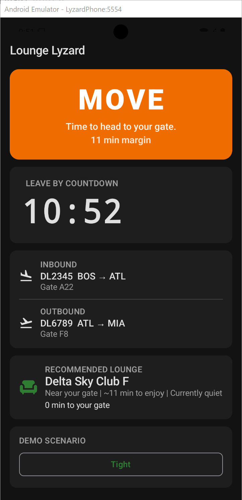

Early product preview
Early screenshots are already showing the core idea: a fast, glanceable decision engine built for travelers in motion.



Who it’s for
- Frequent flyers
- Road warriors
- Business travelers
- Anyone tired of the airport turning into a gym session.
Join the beta
We're building Lounge Lyzard with frequent travelers first. If this sounds useful, request early access and follow along as the beta launches.
Early testers help shape the product. Request early access and follow along as we build the beta.
No spam. Just occasional updates as we build the beta.